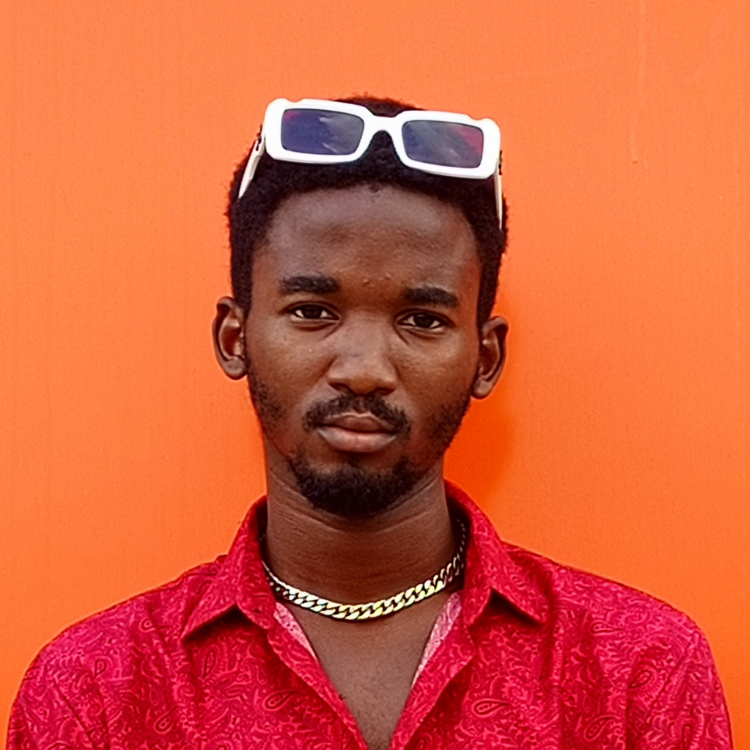

Christian Onyemaechi Alisiobi-Yobo
19, Student

Summary
Born on 13th, June 2005.
Education
- Attended Rosyland Nursery and Primary School, Mafoluku (2011 - 2016)
- Attended Rosyland Comprehensive College, Mafoluku (2017 - 2022)
- Attended David Umahi Federal University of Health Sciences, Uburu (2024 till date) - Bsc. Computer Science
Work Experience
None at the moment.
Skills
- Front-end programming (Basic HTML and CSS)
- Music production
Awards/Certifications
- Won an award for Best Cartoonist in Story Telling Category in the 2016 Cartoon Network Imagination Studios Animation Competition.
- Won an award for 2nd position in singing in the NAPPS Talent Hunt hosted by NAPPS, Lagos branch.
My Hobbies
Contact Me